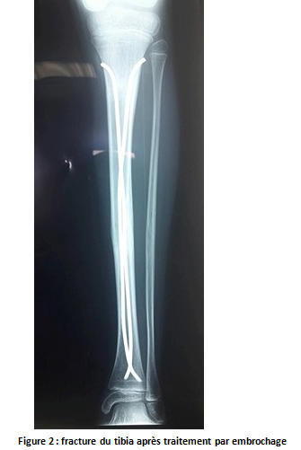
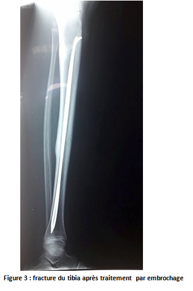
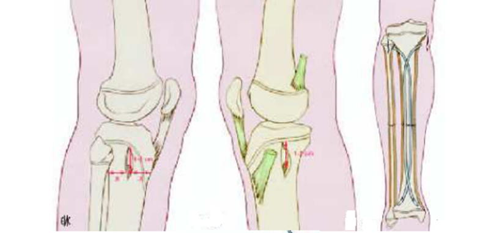
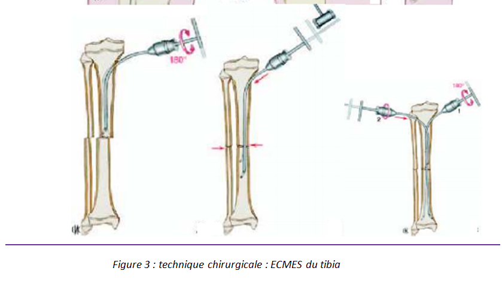
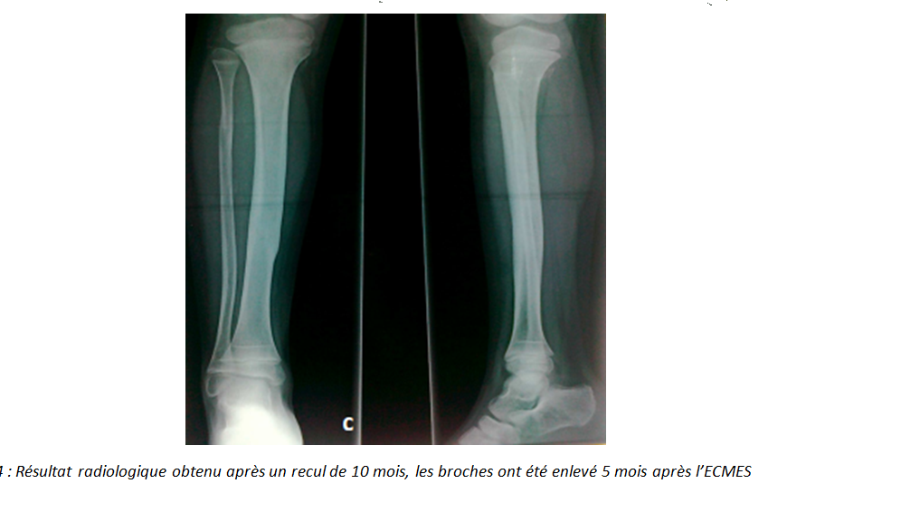

Cas clinique 19
Jambe
Enfant de 7 ans, victime d’un accident de la voie publique : le patient avait été heurté par une moto avec point d’impact cranio-facial et membre inférieur gauche.
L’examen, avait noté l’existence d’une ecchymose de la face antérieure de la jambe gauche avec déformation associée à une douleur exquise à la palpation et à la mobilisation de la jambe gauche.
2.Quel est votre diagnostic ? Interprétez la radiographie. Figure 1 R2
3.Que faut-il rechercher systématiquement ?R3
Réponse :
Tout d’abord, il faut reconnaître et traiter les 3 urgences vitales :
|
Cardio circulatoire |
· ÉTAT DE CHOC dû à une lésion hémorragique interne ou extériorisée. · DIAGNOSTIC POSITIF : o pâleur des téguments, marbrures des genoux, o pouls rapide et filant, temps de recoloration cutanée allongé, tension artérielle abaissée avec pincement de la différentielle. · CONDUITE À TENIR : o oxygénothérapie au masque voire intubation trachéale et ventilation, o mise en place de deux voies d’abord veineux périphériques de gros calibre, o restauration de la volémie par remplissage vasculaire, o massage cardiaque en cas d’arrêt cardio-circulatoire. |
|
Respiratoire |
· DIAGNOSTIC POSITIF : o Agitation, polypnée ou bradypnée, signes de lutte ou d’encombrement, cyanose. · CONDUITE À TENIR : o Libération des voies aériennes supérieures (extraction d’un corps étranger, prévention de la chute en arrière de la langue par sub-luxation de la mandibule). o Intubation trachéale et ventilation, rachis cervical en rectitude. |
|
Neurologique |
· État de conscience (score de Glasgow), réflexe photo- moteur, motilité spontanée. |
e.
Réponse :
C’est une fracture médio-diaphysaire à trait transversal du tibia gauche.
- -Ouverture cutanée.
- -Lésions vasculaires : lésion de l’artère tibiale antérieure ou postérieure.
Toute ischémie constatée constitue une extrême urgence de prise en charge.
- -Lésions nerveuses : nerf fibulaire commun ou ses branches et le nerf tibial.
Réponse :
Sous anesthésie générale, sous scope, réduction à ciel fermé de la fracture puis maintien du foyer par deux broches de Maitezeau : embrochage ascendant. (Figure 2 et 3)


Commentaire :
Après avoir éliminé une urgence vitale cardio-circulatoire, respiratoire et neurologique, on procède à un examen physique complet et à un bilan lésionnel paraclinique initial : TDM cranio-faciale, radiographie du rachis, échographie abdominale, radiographie du bassin et radiographie de la jambe. Le reste du bilan sera réalisé en fonction de l’état du patient.
On immobilise le membre inférieur gauche par une attelle plâtrée.
Par la suite, on administre un traitement antalgique simple périphérique à base de paracétamol (60 mg/kg/j, par voie rectale) et d’anti-inflammatoires non stéroïdiens (Acide niflurique).
Commentaire :
Les indications du traitement chirurgical sont rares et ne se discutent qu’à partir d’un âge > 7ans, en cas de :
- Polytraumatisme,
- Traumatisme crânien grave,
- Fracture instable,
- Fracture ouverte de type II ou III Cauchoix & Duparc vu moins de 6h après le traumatisme.
Figure 1

Pour approfondir :
L’embrochage descendant de Metaizeau est réalisé à l’aide de 2 broches élastiques en titane ou en acier de 40 / 10 de diamètre (ce qui correspond au diamètre médullaire), mises en place à foyer fermé. Ces dernières sont introduites à distance du foyer de fracture par voie descendante, à travers l’extrémité supéro-externe du tibia. Ces broches sont au préalable cintrées de façon à avoir au moins 3 points d’appui dans l’os. Le patient est installé sur table orthopédique et la fracture distractée jusqu'à ce que l’on obtienne un petit écart interfragmentaire. Par une courte incision de 1 cm, un trou est foré dans la corticale à la pointe carrée. La broche fortement cintrée est introduite dans le canal médullaire puis poussée jusqu’au foyer de fracture. Ce temps réalisé, une torsion de la broche sur son axe permet la réduction.
La seconde broche est alors mise en place sans difficulté. Ces broches doivent être coupées suffisamment près de la corticale pour ne pas faire saillie sous la peau est suffisamment loin pour pouvoir être retirée sans difficulté. Les avantages de cette méthode sont assez nombreux : réalisation assez simple, risque infectieux faible, consolidation rapide avec reprise d’un appui partiel dès le 15ème jour. La poussée de croissance est faible du fait de l’absence de dépériostage et de la remise précoce à l’appui.



Références
- El achouri N.
Les fractures de la jambe chez l’enfant
Thèse de médecine N° 77,2005
- Vander Eleste.
Histoire de l’orthopédie et de la traumatologie
Histoire de la médecine (tome 5) pp.51-86
Matrise Orthopédique n116 – août 2002
- Mallet J.
Les fractures de jambe chez lenfant. Les fractures des membres chez lenfant.
Monographie du GEOP sous la direction de JM Clavert, JP Mtaizeau.
Sauramps Montpllier 1990
- Meyrueis P , Cazenave A.
Consolidation des fractures, Fracture healing.
EMC-Rhumatologie Orthopédie 1 (2004);138-162
- Dimeglio A, Bonnel F.
La consolidation osseuse chez lenfant, du normal au pathologique.
Consolidation osseuse. ParisMasson; 1986. p. 95-102.
- Ahmad E.
Traumatologie de lenfant.
Corpus Mdical Facult de Mdecine de Grenoble 2005(237)
- Chotel F. Berard D.Parot R.
Fractures de lenfant.
Monographie du GEOP.
Montpellier-Sauramps médical;2002
- Dendane M.A. Karout Y. Amrani A. El AlamZ.F. Gourinda H.
Lembrochage centromdullaire lastique stable des fractures diaphysaires du tibia chez lenfant Journal de traumatologie du sport 2009; 26:85-90